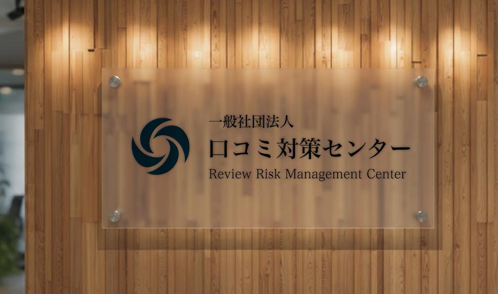

活動理念
Our Mission
誰もが安心して活動できるインターネット社会を創造する。
インターネットは、本来、誰もが自由に表現し、正当に評価されるべき場所です。
しかし、現実には無責任な誹謗中傷や悪意ある口コミによって、誠実な事業者が不当に傷つけられる事態が後を絶ちません。
私たちは、こうした歪んだ現状を正し、挑戦を続ける人々が理不尽な悪評に怯えることなく、その価値を最大限に発揮できる。そんな「当たり前の未来」を創造することを使命としています。
行動指針
Our Values
1. 現場の苦悩に深く寄り添い、共に歩む
ネット上のトラブルは、企業の数字だけでなく、そこで働く人々の心まで疲弊させます。私たちは、ご相談者様が抱える不安を自分事として受け止め、解決の道筋が見えるまで、泥臭く、粘り強く、現場に寄り添い続けます。
2. プロフェッショナルとして、常に「半歩先」を走る
デジタルのリスクは日々形を変え、複雑化しています。私たちは過去の成功体験に固執せず、法務・IT・リスク管理の最先端の知見を磨き続けます。社会の動向に精通し、変化を先読みすることで、常に最適な一手を提案します。
3. 表面的な解決ではなく、根本的な信頼を築く
一時的な情報の削除は、解決の第一歩に過ぎません。私たちは、その先にある企業のブランド価値や、長期的なレピュテーションを守るための仕組みづくりを支援します。目先の対応を超え、将来にわたる「信頼の基盤」を共に創り上げます。
4. 誠実さを貫き、厳格に情報を守り抜く
私たちの活動の土台は、ご相談者様との揺るぎない信頼関係にあります。経営の根幹に関わる情報を扱う重みを深く認識し、厳格な守秘義務と事実に基づいた誠実な対応を徹底します。
会社概要
Company
東京都中央区晴海3-16-1
・インターネット誹謗中傷対策
・権利侵害抑止事業
・SEO/SERPs適正化支援
・デジタルレピュテーション・インテグリティ事業
・社会動向データ・アナリティクス事業
